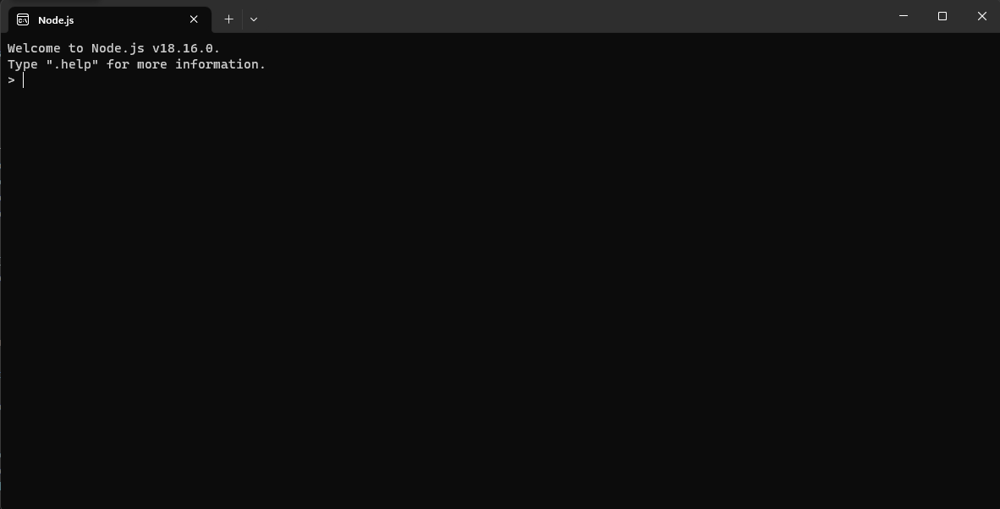

| Contenido | |
|---|---|
| Propósito del software | Proceso de instalacion |
| Video de instalación (Auxiliar) | Evidencia de instalación |
El propósito de Node.js es brindar a los desarrolladores un entorno de ejecución rápido y escalable para construir aplicaciones de servidor eficientes, APIs y servicios web, aplicaciones de red y herramientas de línea de comandos. Su enfoque orientado a eventos y su capacidad para manejar solicitudes de manera asíncrona lo hacen especialmente adecuado para aplicaciones en tiempo real y con alta concurrencia.
Para instalar Node JS, deberas:
En este video se explica de manera mas detallada el proceso de instación
Esta es mi evidencia de instalación
